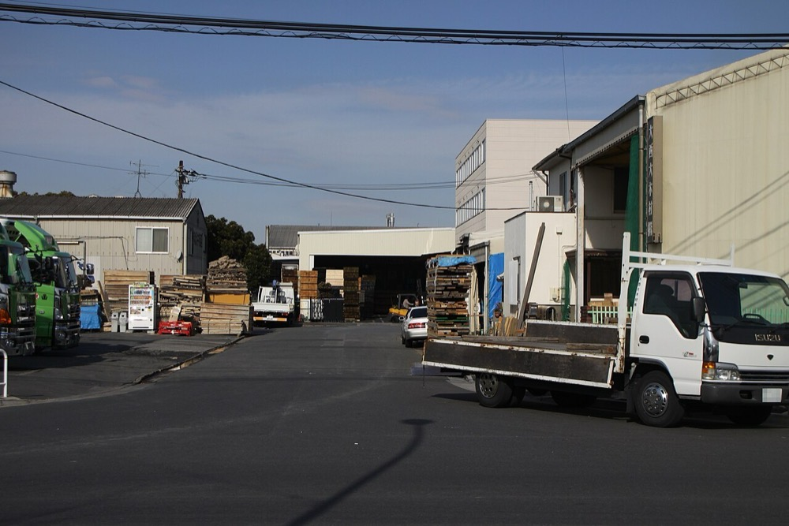
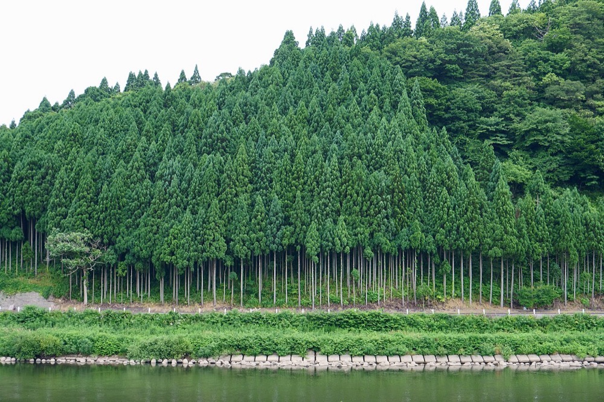

ハウスメーカー・ゼネコン・デベロッパーに、産地と数量を保証した国産材を供給する事業である。最初は素材生産業者と製材所をつないで原木と製材品を直送で手配し、手数料と差額で収益を得る。供給量が確保できた段階で素材生産会社と製材工場を取得し、伐採から製品出荷までを1社で行う。
| 区分 | 金額・数量 | 年 | 出典 |
|---|---|---|---|
| 林業産出額 | 5,713億円 | 2024 | 2 |
| うち木材生産 | 3,276億円 | 2024 | 2 |
| 木材・木製品製造業 出荷額等 | 3兆4,394億円 | 2023 | 3 |
| うちプレカット | 1兆389億円 | 2023 | 3 |
| うち製材業 | 7,824億円 | 2023 | 3 |
| うち合板・単板 | 4,047億円 | 2023 | 3 |
| うち集成材 | 2,303億円 | 2023 | 3 |
| 木材の総需要量 | 8,187万m³ | 2024 | 1 |
| 国内生産量 | 3,481万m³ | 2024 | 1 |
木材生産の3,276億円と製材業の7,824億円は、いずれも1,000億円を超える。ただし製材業の出荷額には輸入材を挽いた製品が含まれる。国産材だけの製材出荷額は今回の調査では確認できなかった。
推計: 国産材の製材出荷額の上限を、製材業出荷額7,824億円 × 国内生産量の比率 42.5% ≒ 3,300億円と置く。自給率は燃料材を含む全需要に対する比率であり、製材用だけの比率とは一致しない。この推計は桁を確認するためのものである。
世界の木材製品市場の総額は、信頼できる一次情報で確認できなかった。比較対象として、米国最大級の森林保有会社 Weyerhaeuser の2025年の売上高は69億ドルである17。国内の総合木材メーカーで自社を国内最大と称する中国木材の売上高は、2025年6月期に1,225億円である18。
CLTの国内生産量は2020年の1.3万m³から2024年に2.1万m³へ増えたが、2025年は1.9万m³に減った。政府の第4次ロードマップは2030年までに年50万m³の安定供給を掲げる。2025年の実績は目標の3.8%である12。中高層木造の需要は政策目標としては大きいが、実需の伸びは確認できていない。
森林由来のJ-クレジットは2025年3月時点で累計139.6万t-CO2が認証され、2024年度は年度途中で77.1万t-CO2であった13。県有林の販売例では12,100円/t-CO2である14。仮に年77.1万tがこの価格で販売されると約93億円になる。計算式は 77.1万t × 12,100円 ≒ 93億円 で、市場全体の価格を示すものではない。
| 工程 | 主なプレイヤー | 規模の手がかり |
|---|---|---|
| 森林所有・素材生産 | 森林組合、民間素材生産業者、国有林 | 素材生産者から工場への直送比率は2023年に41.8%5 |
| 製材 | 中国木材、大型の国産材製材工場 | 最大の製材工場の原木消費量は年65万m³5。中国木材の売上高1,225億円18 |
| 合板 | 大型合板工場 | 最大の合板工場の原木消費量は年49万m³5 |
| プレカット・住宅 | プレカット工場、ハウスメーカー | プレカット製造業の出荷額1兆389億円3 |
工程ごとの上位企業のシェアは、公的統計では確認できなかった。木材産業の労働災害の発生率は1,000人当たり11.4で、製造業平均2.7の4倍を超える5。工場の安全管理は参入の前提条件になる。
1年目は設備を持たない。国産材の調達代行と森林クレジットの組成支援で売上0.5億円を得て、取得する素材生産会社と製材工場の候補を特定する。
| 用途 | 金額 | 内容 |
|---|---|---|
| 人件費 | 1,800万円 | 創業者のほか、林業経験者1名と木材流通の経験者1名 |
| 産地調査・提携費 | 600万円 | 3県で素材生産業者と製材所を訪問し、供給契約を結ぶ |
| 在庫・運転資金 | 900万円 | 原木と製材品の立替払い。入金までの約60日分 |
| クレジット組成費 | 400万円 | J-クレジットのプロジェクト登録と審査の費用を立て替える |
| 予備費 | 300万円 | 価格変動と貸倒れへの備え |
| 計 | 4,000万円 |
| 月 | 行うこと | 検証すること |
|---|---|---|
| 1〜2 | 大口需要家20社への訪問、産地3県の選定 | 産地指定の国産材に対価を払う需要家がいるか |
| 3〜5 | 素材生産業者5社、製材所3社と供給契約。初回の受注と出荷 | 直送で流通経費をどれだけ削減できるか |
| 6〜8 | 森林所有者2者とクレジット登録の契約。市町村と集約化構想の協議 | クレジットの買い手と価格 |
| 9〜12 | 取得候補の素材生産会社と製材工場の財務調査。公庫と地銀に事業計画を提示 | 取得価額と融資の条件 |
| 段階 | 資金の種類 | 借入先 | 担保・根拠 |
|---|---|---|---|
| 1〜2年目 | 運転資金 | 日本政策金融公庫 国民生活事業、信用保証付きの地銀融資 | 大口需要家との受注契約 |
| 2〜3年目 | 素材生産会社の株式取得資金、林業機械 | 公庫の事業承継向け融資、機械はリース | 取得会社の事業と機械 |
| 3〜5年目 | 製材工場の取得・更新 | 公庫 農林水産事業の林業向け資金、地銀の協調融資 | 工場の土地・建物・設備。林産物の処理加工施設を対象とする資金は償還期間20年以内の例がある19 |
| 5〜10年目 | 大型工場の新設 | メガバンクと地銀のシンジケートローン、設備のリース | 長期の供給契約と工場資産 |
| 全期間 | 補助金 | 林野庁・都道府県の林業・木材産業向け補助 | 補助率と採択条件は年度ごとに異なる |
製材工場は土地・建物・設備が担保になるため、資金源の型はBに当たる。2〜3年目の素材生産会社の取得は借入による買収で、型Cを併用する。

| 年目 | 売上 | 営業利益 | 累計投資 | 借入残高 | 主な状態 |
|---|---|---|---|---|---|
| 1 | 0.5億円 | -0.3億円 | 0.4億円 | 0.3億円 | 調達代行のみ |
| 2 | 3億円 | -0.2億円 | 2億円 | 1.5億円 | 素材生産会社1社を取得 |
| 3 | 25億円 | 0.5億円 | 15億円 | 12億円 | 製材工場1か所 原木5万m³ |
| 5 | 120億円 | 6億円 | 90億円 | 70億円 | 原木25万m³ |
| 7 | 350億円 | 21億円 | 300億円 | 220億円 | 原木80万m³ |
| 10 | 780億円 | 55億円 | 700億円 | 480億円 | 原木150万m³、大型工場3か所 |
| 年目 | 売上 | 営業利益 | 累計投資 | 借入残高 | 主な状態 |
|---|---|---|---|---|---|
| 1 | 0.5億円 | -0.4億円 | 0.4億円 | 0.3億円 | 調達代行のみ |
| 2 | 1.5億円 | -0.3億円 | 1億円 | 0.8億円 | 取得は見送り |
| 3 | 5億円 | -0.2億円 | 4億円 | 3億円 | 素材生産会社1社を取得 |
| 5 | 30億円 | 0.6億円 | 25億円 | 20億円 | 製材工場1か所 原木5万m³ |
| 7 | 80億円 | 2.4億円 | 70億円 | 55億円 | 原木15万m³ |
| 10 | 210億円 | 8.4億円 | 170億円 | 120億円 | 原木40万m³ |
10年でシェア1位には届かない見込みである。楽観でも10年目の売上は780億円で、中国木材の現在の売上1,225億円18 を下回る。製材業7,824億円3 に対するシェアは約10%になるが、首位の企業は輸入材も扱うため、同じ市場で比較すると首位には届かない。
国産材だけに市場を限ると状況は異なる。楽観の原木150万m³は国内生産量3,481万m³1 の約4.3%で、現在最大の製材工場65万m³5 の2倍強にあたる。国産材の取扱量で首位になれる可能性はあるが、首位企業の国産材取扱量は今回確認できなかった。

止まる位置は、保守の場合で売上200億円前後、地域の大型製材会社の一つである。原木の確保量が増えないことが上限を定める。
国産材という定義上、海外展開は輸出に限られる。2025年の木材輸出額は596億円で前年比11%増、製材は38%増であった。中国向けは6%増、米国向けは23%増、フィリピン向けは28%増である20。
この事業がグローバルなインフラになる可能性は低い。海外の森林を取得して経営する形にすれば国産材の定義から外れる。
| # | 基準 | 判定 | 根拠 |
|---|---|---|---|
| 1 | 50年、魂を燃やし続けられるか | 創業者が判定 | |
| 2 | 10年以内に国内市場規模1,000億円以上の市場でシェア1位になれるか | × | 楽観でも10年目の売上780億円で、製材業の首位企業の売上1,225億円を下回る。 |
| 3 | 4,000万円で始められ、融資で伸ばせるか | ○ | 調達代行は設備なしで始められ、製材工場は土地と設備を担保に借入できる。 |
| 4 | グローバルなインフラになり得るか | △ | 輸出は2025年に596億円まで伸びたが、国産材の定義上、海外での事業は輸出に限られる。 |
| 5 | 営業力が最初の売上に直接結びつくか | ○ | 最初の売上はハウスメーカーとゼネコンへの法人営業による調達代行の受注である。 |
| 6 | 同じビジョンを共有する仲間を誘える事業か | 創業者が判定 | |
| 7 | 本業が早く現金を生み、返済と出資の原資になるか | △ | 製材の営業利益率は低く、工場の投資が先行するため、5年目まで現金は残らない。 |
| 8 | 投資先を束ねる群の中核になれるか | ○ | 原木を確保する立場から、計測・設計・燃料・機械の各社に需要を提供できる。 |
| 9 | 成長の資金源がA・B・Cのどれに当たるか | B | 製材工場の資産を担保に借りる。素材生産会社の取得ではCを併用する。 |